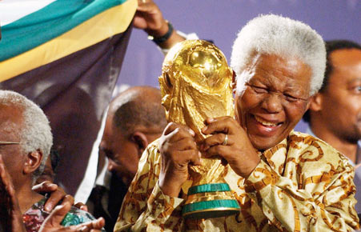

Nelson Rolihlahla Mandela
"MITO MANDELA"

NELSON MANDELA LEVANTA A TAÇA DA COPA DE 2010.
LINHA DO TEMPO NELSON MANDELA
-
1918 Em 18 de julho, nasce em Mvezo, na África do Sul. Sua origem foi próxima a Qunu, atual província do Cabo Leste. Membro de uma família da etnia xhosa, ele recebe o nome de Rolihlahla Mandela.
-
1925 Na escola primária, em uma vila próxima de Qunu, recebe de uma professora o nome Nelson, em homenagem ao almirante Horatio Nelson. Na época, era costume dar nomes ingleses a todas as crianças que frequentavam a escola.
-
1927 Aos 9 anos de idade, Mandela perde o pai e é enviado para a vila real de Mqhekezweni, onde fica aos cuidados do regente do povo Tembu, Jongintaba Dalindyebo.
-
1934 Em janeiro, num vale isolado às margens do rio Mbashe, Mandela foi levado para a cerimônia pública de circuncisão, um rito de passagem dos jovens Tembu. Era a partir deste ritual que o jovem passava a ser considerado homem.
-
1939 Enquanto cursava Artes na Universidade de Fort Hare, ele conheceu Oliver Tambo. O ativismo político dos dois, em 1941, fez com que fossem expulsos da instituição.
-
1941 Foge para Johanesburgo depois que o rei de sua tribo arranjou um casamento para ele. Na capital, arruma emprego como vigia noturno de uma mina e conhece Walter Sisulu, seu futuro mentor no ativismo contra o apartheid
-
1942 Passa a frequentar reuniões do Congresso Nacional Africano (CNA), organização anti-apartheid, onde entende a dimensão da luta racial que definiria seu destino.
-
1943 Forma-se bacharel em Direito na University of South Africa (UNISA).
-
1944 Ajuda a fundar a ala jovem do CNA com Oliver Tambo e Walter Sisulu. No mesmo ano, casa-se com a enfermeira Evelyn Mase. O casal tem dois filhos e duas filhas _ uma delas morta ainda na infância. Os dois assinam um divórcio em 1958.
-
1947 Mandela se une ao Congresso Nacional Africano (CNA). Neste ano nasce também a primeira filha, Makaziwe, que morre aos 9 meses de idade.
-
1948 A extrema-direita branca institui o regime do apartheid, política baseada no "desenvolvimento separado das raças", que oficializa a segregação que existe desde o século XVI. Mandela se torna secretário nacional da Liga Jovem do CNA e coordena uma campanha contra o apartheid, que resultou na prisão de 8.500 ativistas.
-
1952 Na condição de presidente da Liga Jovem do CNA, é preso pela primeira vez e condenado a trabalhos forçados. Foi acusado pela Lei de Supressão do Comunismo, mesmo após negar ser comunista.
-
1958 Casa-se pela segunda vez, com a assistente social Nomzamo Winnie Madikizela, com quem tem duas filhas. Os dois se divorciam em 1996.
-
1998 No seu 80º aniversário, casa-se com Graça Machel, viúva de ex-presidente moçambicano Samora Machel. Ordena uma intervenção militar no Lesoto.
-
2002 Contraria seu sucessor pela forma com que tratava o avanço da epidemia da aids.
-
2004 Aos 85 anos, anuncia a retirada da vida pública. Diz que quer dedicar tempo à família e à luta contra a aids. No ano seguinte, anuncia que seu filho Makgatho morreu por complicações causadas pelo HIV.
-
2009 Participa da posse do presidente Jacob Zuma.
-
2012 É internado com infecção pulmonar em 8 dezembro, recebe alta antes do Ano-Novo.
-
2013 Morre no dia 5 de dezembro, às 20h50min (16h50min, horário de Brasília) aos 95 anos, após ser internado com infecção pulmonar. Ele morreu em Pretória, ao lado da família.
Se você quiser saber mais sobre os ensinamentos do Sr. Mandela por favor Clique Aqui.
Voltar ao Topo